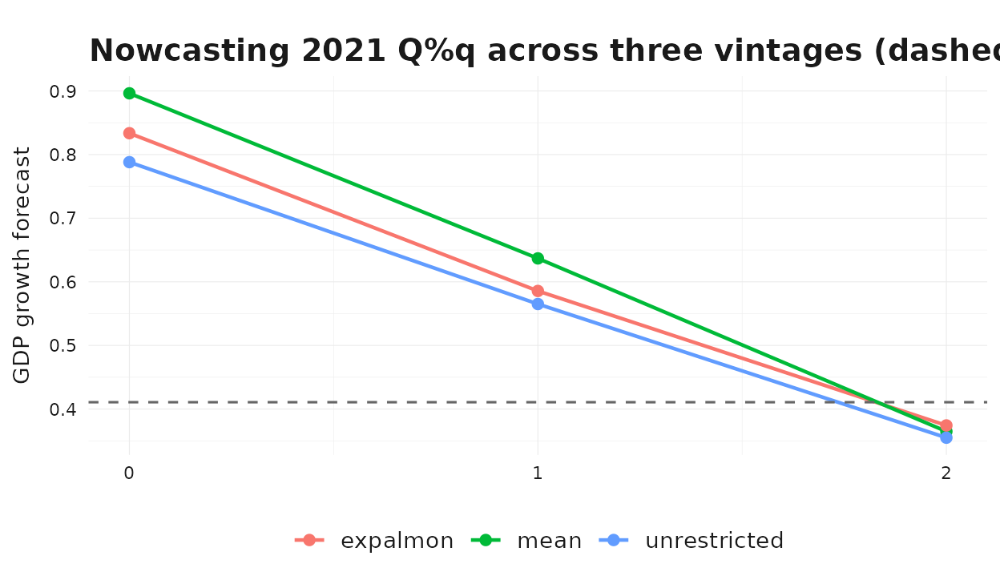
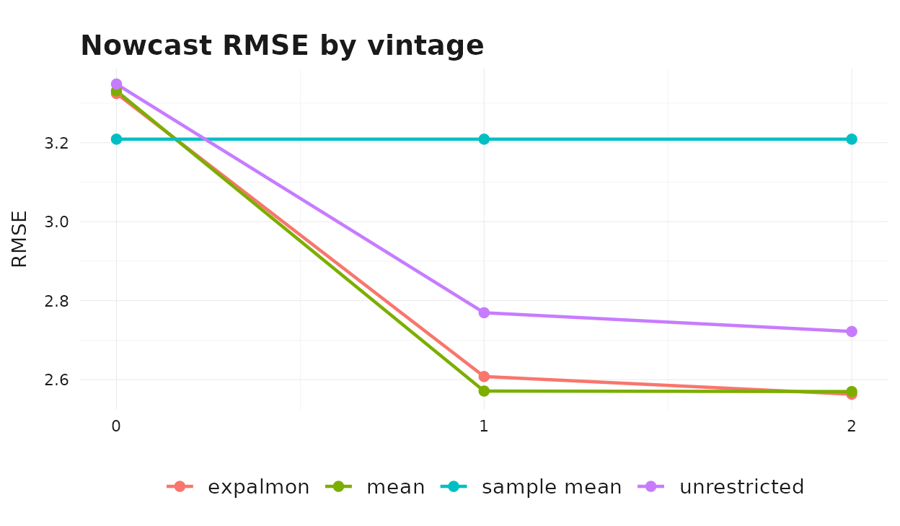
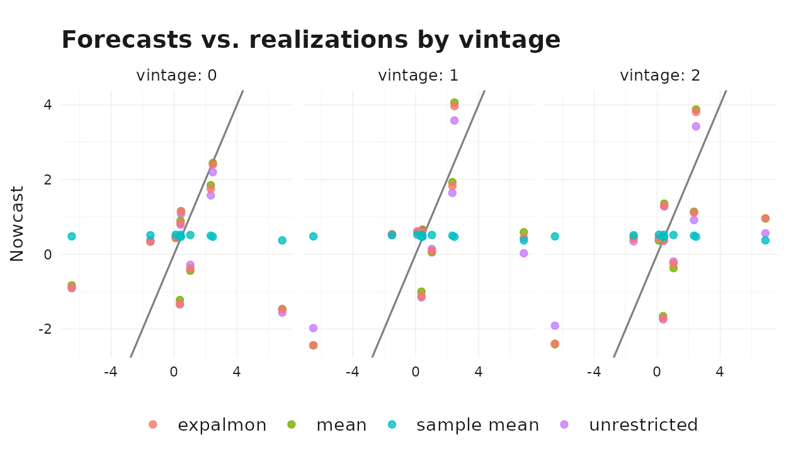

Why Real-Time Evaluation Matters
In practice, GDP nowcasts are produced repeatedly during a quarter as new monthly indicator data arrives. A useful nowcast does two things at once:
- It improves as the target quarter unfolds and more indicator data becomes available.
- It beats simple benchmarks built only from past target observations.
This vignette walks through that exercise on the package’s Swiss data, combining quarterly GDP growth with the monthly KOF barometer. It reproduces the canonical real-time pattern — accuracy improves with the information set — and compares three aggregation strategies against a naive sample-mean benchmark.
Setup
gdp_growth <- suppressMessages(tsbox::ts_na_omit(tsbox::ts_pc(gdp)))
# Evaluation window: the most recent 10 completed quarters.
n_q <- nrow(gdp_growth)
eval_indices <- (n_q - 11):(n_q - 2)
eval_quarters <- gdp_growth$time[eval_indices]
range(eval_quarters)
#> [1] "2020-01-01" "2022-04-01"For each target_q in the evaluation window we want three
nowcast vintages:
-
Vintage 0: at the start of
target_q, no monthly observations insidetarget_qare yet available. -
Vintage 1: one month into
target_q, the first monthly observation is available. - Vintage 2: two months in, the first two monthly observations are available.
Each vintage uses target history up to target_q - 1 and
the corresponding indicator slice. We use
indic_predict = "last" to extrapolate any remaining
within-quarter slots in a cheap, deterministic way;
auto.arima would work too at higher cost.
fit_at_vintage <- function(target_q, vintage, aggregator) {
train_target <- gdp_growth |>
dplyr::filter(.data$time < target_q)
cutoff_month <- target_q %m+% lubridate::period(num = vintage, units = "month")
train_indic <- baro |>
dplyr::filter(.data$time < cutoff_month)
solver <- if (aggregator == "expalmon") {
list(seed = 1, n_starts = 1, maxiter = 50)
} else {
NULL
}
mf_model(
target = train_target,
indic = train_indic,
indic_predict = "last",
indic_aggregators = aggregator,
target_lags = 1,
h = 1,
solver_options = solver
)
}A Single-Quarter Illustration
Before running the full loop, look at how a nowcast for one quarter evolves across vintages.
demo_q <- eval_quarters[length(eval_quarters) - 2]
demo_truth <- gdp_growth$values[gdp_growth$time == demo_q]
demo_methods <- c("mean", "unrestricted", "expalmon")
demo_rows <- list()
for (m in demo_methods) {
for (v in 0:2) {
fit <- fit_at_vintage(demo_q, v, m)
fc <- as.numeric(forecast(fit)$mean)[[1]]
demo_rows[[length(demo_rows) + 1]] <- dplyr::tibble(
method = m, vintage = v, forecast = fc
)
}
}
demo_df <- dplyr::bind_rows(demo_rows)
ggplot2::ggplot(
demo_df,
ggplot2::aes(x = .data$vintage, y = .data$forecast, color = .data$method)
) +
ggplot2::geom_line(linewidth = 0.8) +
ggplot2::geom_point(size = 2) +
ggplot2::geom_hline(
yintercept = demo_truth,
linetype = "dashed",
color = "grey40"
) +
ggplot2::scale_x_continuous(breaks = 0:2) +
ggplot2::labs(
title = paste0(
"Nowcasting ", format(demo_q, "%Y Q%q"),
" across three vintages (dashed = realized value)"
),
x = "Vintage (months of indicator observed inside the target quarter)",
y = "GDP growth forecast"
) +
theme_bridgr()
As we move from vintage 0 to vintage 2 the methods generally pull toward the realized value as more monthly information about the target quarter becomes available.
Full Real-Time Loop
Now iterate over the evaluation window, all three vintages, and the three aggregators.
methods <- c("mean", "unrestricted", "expalmon")
results <- list()
for (q_idx in seq_along(eval_quarters)) {
target_q <- eval_quarters[[q_idx]]
truth <- gdp_growth$values[gdp_growth$time == target_q]
for (v in 0:2) {
for (m in methods) {
fit <- fit_at_vintage(target_q, v, m)
fc <- as.numeric(forecast(fit)$mean)[[1]]
results[[length(results) + 1]] <- dplyr::tibble(
target_q = target_q,
vintage = v,
method = m,
forecast = fc,
actual = truth,
error = fc - truth
)
}
}
}
# Sample-mean benchmark: prevailing-mean of in-sample target growth.
for (q_idx in seq_along(eval_quarters)) {
target_q <- eval_quarters[[q_idx]]
truth <- gdp_growth$values[gdp_growth$time == target_q]
bench <- mean(gdp_growth$values[gdp_growth$time < target_q])
for (v in 0:2) {
results[[length(results) + 1]] <- dplyr::tibble(
target_q = target_q,
vintage = v,
method = "sample mean",
forecast = bench,
actual = truth,
error = bench - truth
)
}
}
results_df <- dplyr::bind_rows(results)Method × Vintage Scoreboard
scoreboard <- results_df |>
dplyr::group_by(.data$method, .data$vintage) |>
dplyr::summarise(
rmse = sqrt(mean(.data$error^2)),
mae = mean(abs(.data$error)),
.groups = "drop"
) |>
dplyr::arrange(.data$method, .data$vintage)
scoreboard
#> # A tibble: 12 × 4
#> method vintage rmse mae
#> <chr> <int> <dbl> <dbl>
#> 1 expalmon 0 3.32 2.10
#> 2 expalmon 1 2.61 1.79
#> 3 expalmon 2 2.56 1.91
#> 4 mean 0 3.33 2.10
#> 5 mean 1 2.57 1.77
#> 6 mean 2 2.57 1.92
#> 7 sample mean 0 3.21 2.05
#> 8 sample mean 1 3.21 2.05
#> 9 sample mean 2 3.21 2.05
#> 10 unrestricted 0 3.35 2.14
#> 11 unrestricted 1 2.77 1.85
#> 12 unrestricted 2 2.72 1.97The clearest single chart is RMSE by vintage, with each method as a separate line.
ggplot2::ggplot(
scoreboard,
ggplot2::aes(x = .data$vintage, y = .data$rmse, color = .data$method)
) +
ggplot2::geom_line(linewidth = 0.8) +
ggplot2::geom_point(size = 2) +
ggplot2::scale_x_continuous(breaks = 0:2) +
ggplot2::labs(
title = "Nowcast RMSE by vintage",
x = "Vintage (months of indicator observed inside the target quarter)",
y = "RMSE",
color = NULL
) +
theme_bridgr()
Two patterns are typical in this setup:
- Accuracy improves with the information set. All three indicator- based methods see their RMSE fall as the vintage advances, while the sample-mean benchmark is flat — it does not use indicator information at all.
- Method ranking is sensitive to vintage. At vintage 0 the simple mean aggregator is often competitive because the within-quarter shape is fully extrapolated and parametric weights cannot exploit information that is not yet observed. At vintages 1 and 2 the unrestricted and parametric specifications start to differentiate their within-quarter behavior.
Forecasts vs. Realizations
To put the RMSE numbers into context, plot every (forecast, realization) pair colored by method and faceted by vintage.
ggplot2::ggplot(
results_df,
ggplot2::aes(x = .data$actual, y = .data$forecast, color = .data$method)
) +
ggplot2::geom_abline(slope = 1, intercept = 0, color = "grey50") +
ggplot2::geom_point(alpha = 0.8) +
ggplot2::facet_wrap(~ .data$vintage, labeller = ggplot2::label_both) +
ggplot2::labs(
title = "Forecasts vs. realizations by vintage",
x = "Realized GDP growth",
y = "Nowcast"
) +
theme_bridgr()
Points closer to the 45-degree line are more accurate forecasts. The sample-mean benchmark sits on a horizontal cloud — it cannot react to realized GDP movements at all. The indicator-based methods spread along the 45-degree line and tighten as the vintage advances.
Where to Go Next
The exercise above is intentionally lean: one indicator, one horizon,
a short evaluation window, and indic_predict = "last" for
all vintages. In a production setup you would typically:
- Add more indicators and combine them in a single
mf_model()call. - Compare additional
indic_predictrules such as"auto.arima"or"direct". - Use higher
n_startsfor parametric aggregators in the optimizer. - Extend the evaluation window and score with additional metrics (CRPS, directional accuracy, etc.).
The companion vignette
vignette("mixed-frequency-modeling", package = "bridgr")
discusses the aggregators in more depth, and
vignette("uncertainty-and-scenarios", package = "bridgr")
shows how to attach prediction intervals to the nowcasts produced
above.